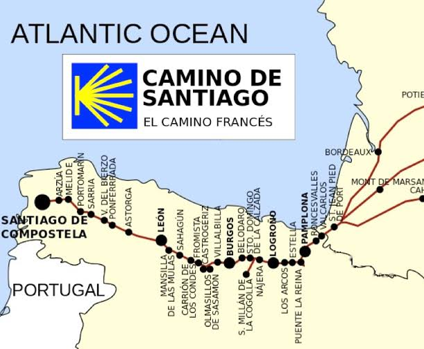

Welcome to Your Journey
Walk the final 100 km of the ancient Camino Francés

"Take your time to appreciate every stamp. While paper passports may become history, the journey they prove will last a lifetime. Collect them wisely."
Your Adventure at a Glance
Plan Your Journey
📍 The Route
Starting from Sarria, you'll walk approximately 115 km over 5 days, meeting the minimum 100 km requirement to earn your official Compostela (pilgrim certificate). Follow the classic Camino Francés through Galicia.
🏨 Where to Sleep
Choose between budget-friendly municipal albergues (€8-12), private hostels (€15-20), or comfortable hotels (€40-100+). Sarria, Portomarín, Palas de Rei, Arzúa, O Pedrouzo, and Santiago each offer multiple options.
🍽️ What to Eat
Early breakfasts at 7-8 AM, mid-morning snacks, picnic lunches, and hearty dinners with the famous Menú del Peregrino (€12-18). Experience Galician specialties like pulpo a la gallega and Arzúa cheese.
🎒 What to Pack
Carry 6-8 kg maximum in a 30-40L backpack, or use a luggage transfer service (€25-35 total). Pack essentials only: two sets of hiking clothes, rain protection, blister kit, and merino wool socks.
💧 Water Access
Drinking water is safe and readily available. Carry 1-1.5 liters at a time. Look for fountains marked "Agua Potable" in villages every 3-5 km. Cafes will refill your bottle for free.
💰 Budget Planning
Budget €180-330 total: €12-20/night accommodation + €20-35/day food + optional €7/day luggage service. Choose "Minimalist" (€180) or "Comfort Hiker" (€330) approach.
Learn More About Your Journey
Click on each section above in the navigation to dive deeper into the logistics of your 5-day adventure. Each page covers essential planning information to ensure you're fully prepared.